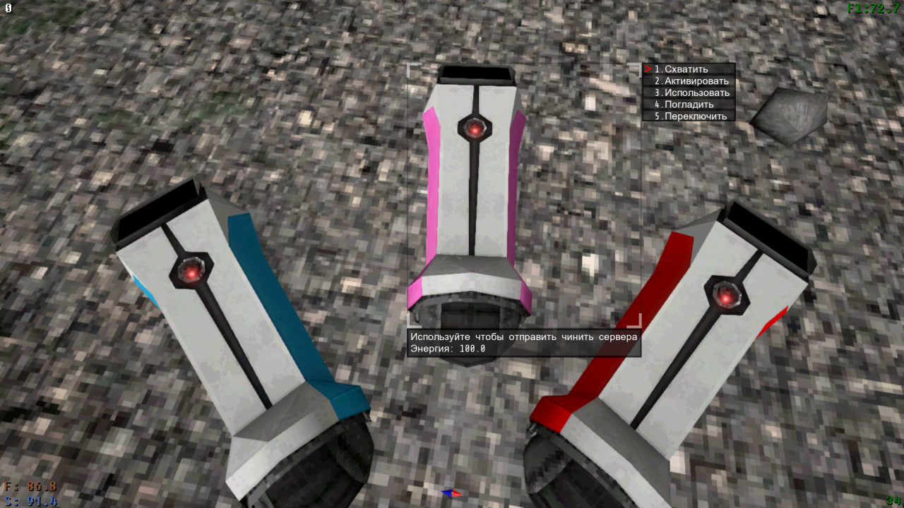
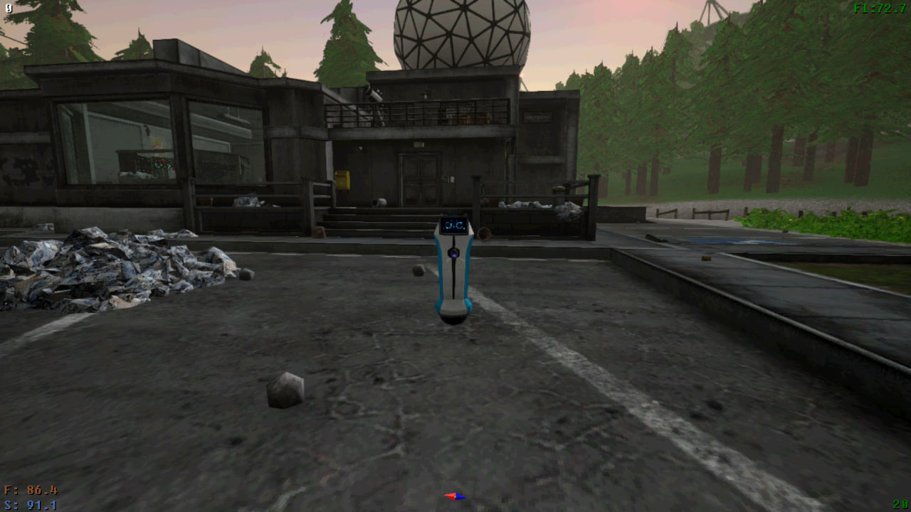
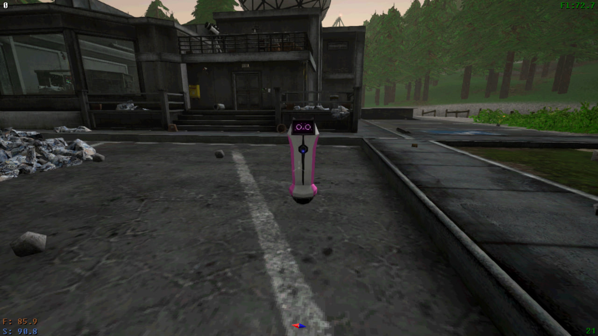
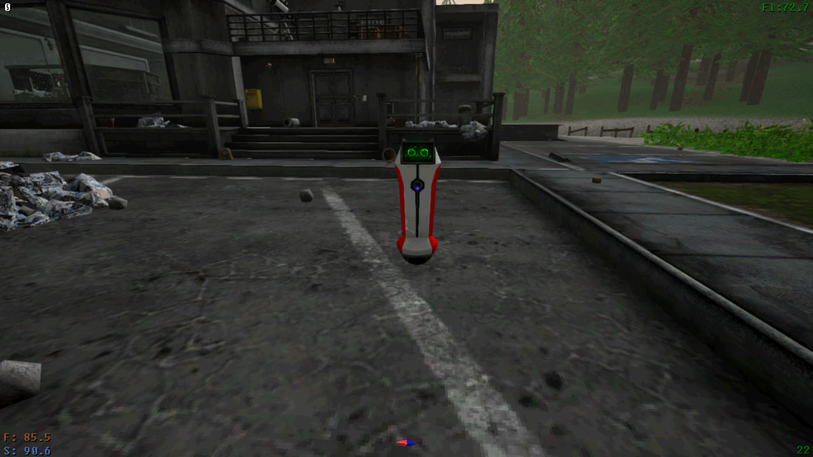

Керфури, їх призначення в грі, як ними користвуватися та головне, як швидко на них заробити, ви знайтете на цьому посту.
Керфуры, их назначение в игре, как ими пользоваться и главное, как быстро на них заработать, вы найдете в этом посте.
Kerfurs, their purpose in the game, how to use them, and most importantly, how to quickly earn with them, you will find in this post.




Хто ж такі Керфури?
Керфури це твій початковий робот помічник який знадобиться тобі з самого початку гри, раджу почати накопичувати кредити (ігрову валюту) та купляти саме його бо він буде тобі допомагати з ремонтом серверів, також є Омега Керфур але він в іншому розділі.
Використання досить просте, вмикаєш його і вибираючи четвертий розділ та натискаючи E він поїде лагодити сервера.
Кто такие Керфуры?
Керфуры – это твой начальный робот-помощник, который понадобится тебе с самого начала игры. Рекомендую начать накапливать кредиты (игровую валюту) и покупать именно его, так как он будет помогать с ремонтом серверов. Также есть Омега Керфур, но он в другом разделе.
Функционал-
- Требует зарядки
- Может чинить сервера
- Можно погладить
Использование довольно простое: включаешь его, выбираешь четвертый раздел и нажимаешь E, он поедет чинить сервера.
Who are the Kerfurs?
Kerfurs are your initial robot assistant that will be useful to you from the very beginning of the game. I recommend starting to accumulate credits (in-game currency) and purchasing it, as it will help you with server repairs. There is also an Omega Kerfur, but it is in a different section.
Features-
- Requires charging
- Can repair servers
- Can be petted
Usage is quite simple: turn it on, select the fourth section, and press E, and it will go to repair the servers.